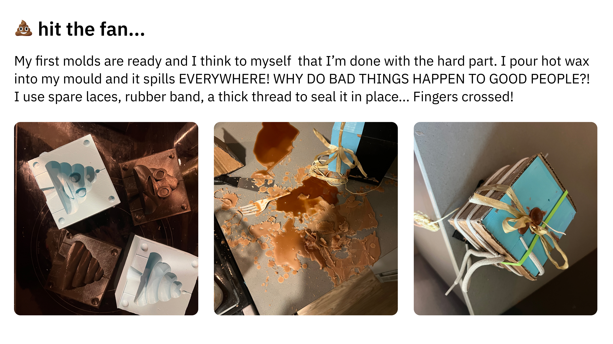
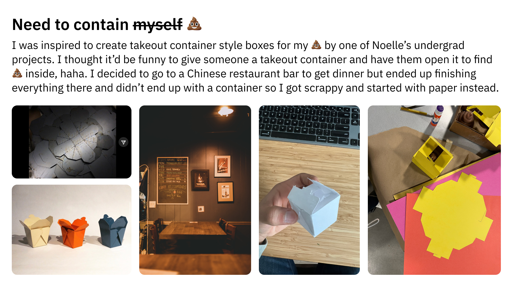

My 💩 making process
💩 Cult
Special thanks to Noelle Antignano, Petrina Chan, Mary Gower, Rodrigo T., Vanessa Chien, TA Junchao, and everyone else that made it possible for me to keep my 💩 together this quarter.